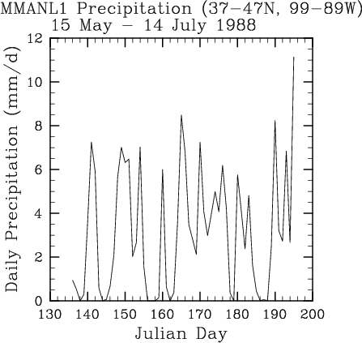
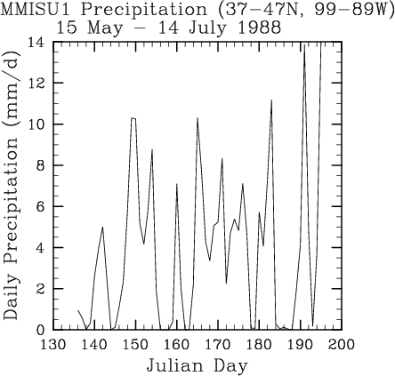

Results from simulations that overlap the PIRCS-1(a) simulation period, 15 May 1988 through 15 July 1988. Results for the 60-day period are extracted from the output of short and long duration simulations: (1) 60-day simulation beginning at 00Z 15 May 1988 and (2) multi-year simulation beginning at 00Z 1 July 1986. Driving data for these simulations come from the NCEP-DOE Reanalysis-II project. The simulations are labeld as follows.
The results are organized into tables such that results from short duration simulations
are presented in table row #1, and those from long duration simulations are
in table row #2. Column #1 contains results from MMANL1, whereas columns #2 and #3 show results
from MMISU2 and MMISU1, respectively. Simulations MMANL1 and MMISU2 are identical except the simulations
were made by different computer architectures.
Some table cells may be empty. We will add these results
and others as we receive data.
| MMANL1 Simulations | MMISU2 Simulations | MMISU1 Simulations | |
|---|---|---|---|
| Short Duration |
|
|
|
| Long Duration |
|
|
| MMANL1 Simulations | MMISU2 Simulations | MMISU1 Simulations | |
|---|---|---|---|
| Short Duration |  |

|
 |
| Long Duration |

|

|